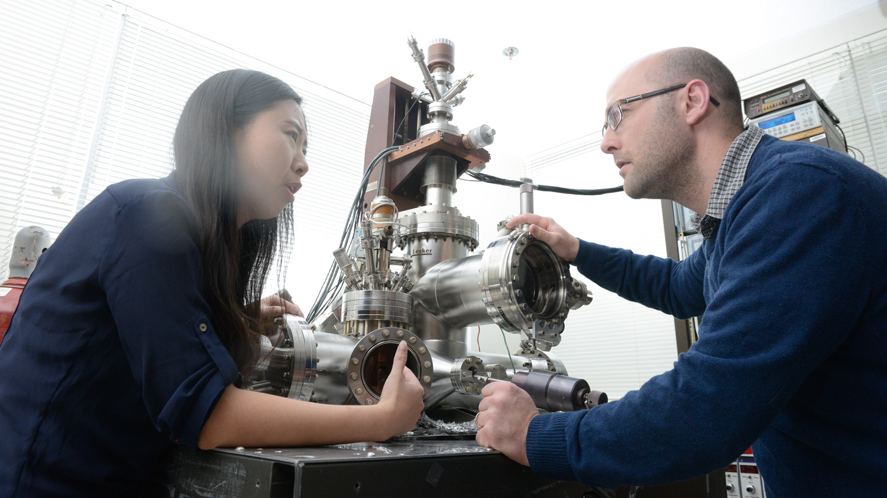
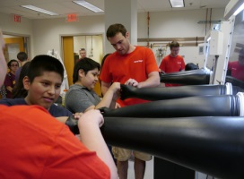

About Us
Mission Statement
The Organic and Carbon Electronics Lab is an intellectual center where basic science insights about Carbon Materials smoothly translate into new solutions to international problems, and applied needs drive an intense pursuit of basic knowledge.
Our Mission is to train the next generation of interdisciplinary researchers in an inclusive, engaging and high pace research and learning environment that places a premium on the quality of ideas, scholarship and innovations. We will measure the impact of our people through their publications and patents, their engagement with partners and stakeholders in industry and national laboratories, and their commercialization activities through licensing and entrepreneurial activities.
Vision
Carbon electronics offers fundamentally new avenues to solve some of the most important Grand Challenges of the 21st century, while at the same time requires only low energy-budget, environmentally friendly processing and offers possible cradle-to-cradle recycling. Faculty located in the Research Triangle perform world class research in carbon electronics, and the Organic and Carbon Electronics Lab at NC State is a nucleus of these efforts that coordinates a number of NC State faculty across several colleges, provides shared facilities for synergistic activities and maintains collaboration to partner institutions such as UNC-CH, AppState, Duke, and NCCU.
We aspire to be a transformational education, training, and research hub that accelerates the world’s transition to sustainable energy utilization and novel quantum applications of molecular, organic and hybrid functional materials and devices.
We Find Solutions to Grand Challenges
We employ carbon-based organic and hybrid materials to find solutions for real problems. ORaCEL research seeks to develop solar energy conversion devices, self-powered green houses, e-textiles, light emitting displays, spintronic devices and much more based on solution processed carbon-based materials.
Our research gives results.
A number of our research results appear in peer-reviewed high impact factor journals.
We Collaborate
ORaCEL collaborates with various departments within NCSU and other institutions around the Research Triangle Park area to develop technologies that benefit society. A good example is our research that aims at developing a self-powered greenhouse; a collaborative project that involves physicists, engineers, plant scientists and economists. This research is supported by NSF and it has recently been highlighted in the media.
We Train Graduate Students
We engage graduate and undergraduate students in research that involves state-of-the-art facilities and innovative ideas. Graduate students are involved in various research topics, such as revolutionary computing approaches based on molecular spintronics, truly renewable energy sources and self-sustaining systems such as self-powered greenhouses. Research topics on a range of electronic devices (e.g. transistors, sensors, optoelectronics, e-textiles) as well as fundamental research such as nanoscale-tribology, involve both our graduate and undergraduate students.
We Hold Outreach Events
Our research also focuses on educating young generations on research topics that solves real problems. Our outreach events are designed to engage students in a hands-on experience, which greatly influences the attitude of high school students towards STEM and Engineering.
